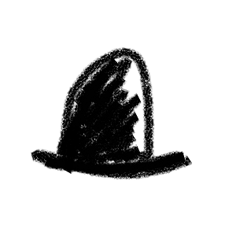

Pt
A Pt represents a point in space, or more technically, an n-dimensional vector. You may also think of a Pt as an array of numeric values, or like an arrow coming from the origin point (0,0,0...).
Creating a Pt
You can create a Pt in different ways:
new Pt()
new Pt( 1, 2, 3, 4 )
new Pt( [1,2,3] )
new Pt( {x:0, y:1, z:2, w:3} )
new Pt( anotherPt )
Pt.make( 5, 0 ) // same as new Pt(0,0,0,0,0)
Pt is implemented as a subclass of javascript's Float32Array. That means you may use all the Float32Array features on a Pt too. For example:
p[0]
pt.fill( 0, 1, 2 )
pt.reduce( (a,b) => Math.max(a,b), 0 );
Note that some Float32Array functions return a new Float32Array. You may cast it back to Pt by a simple wrapping:
new Pt( pt.slice(1,3) )
pt.$slice(1,3) // or alternatively, use $slice
Updating values
Let's first look at how you may change a Pt's values. It's like moving a Pt to another position. The simplest ways are to use to function or access the x, y, z, w properties:
pt.to(1,2,3)
pt.to( anotherPt )
p.w = p.x + p.z
Calculating values
Pt provides functions for vector arithmetics, which is to say, you can perform calculations on arrays of values like adding or multiplying them.
pt.add( 1, 2 )
pt.divide( 5 ) // divide each value by 5
pt.multiply( {x: 2, y: 1} )
pt.subtract( anotherPt ).multiply( 5 ).add( [1,2,3] )
The above functions will update the values of the object pt. If you want to get the results as a new Pt, using $add etc instead.
let s = pt.$add( 1,2,3 );
let b = pt.$multiply( 5 ).add( 1,2,3 )
There are other basic vector operations like unit (get a normalized vector), magnitude (get its distance from origin), dot (find dot product), $project (find its projection vector). Check the docs for a full list.
Angles
Since a Pt can be thought of as an arrow from origin, you can find its angle with angle function. You can also find the angle between two Pts with angleBetween function. A related function toAngle() lets you move a Pt by specifying a target angle.
pt.angle()
pt.angle(Const.yz) // get the angle of axis y-z
pt.angleBetween( anotherPt )
pt.toAngle( Math.PI/2 )
Note that all angles are specified in radian, where 180 degrees = π radian. You can use Num.toRadian and Num.toDegree functions to convert between degrees and radian.
Transformations
If you use Illustrator or other graphics software, you'll probably know operations to rotate or scale a shape. Pt also provides these transformation functions:
pt.scale( 0.5 )
pt.rotate2D( Math.PI/3 )
pt.shear2D( [0.3, 1.2] )
pt.reflect2D( [p1, p2] )
If you want to transform from a specific anchor point instead of at (0,0), provide an anchor as the second parameter:
pt.scale( 0.5, anchorPt )
pt.rotate( Math.PI/3, anchorPt )
Another common way is to transform a Pt is to use $map(...) with a custom transform function. This is similar to Array's map(...) function.
let np = pt.$map( (d) => d*d )
(Note that you may still use map but it will return a Float32Array instead of a Pt)
let np = new Pt( pt.map( (d) => d*d ) // same result as pt.$map(...)
